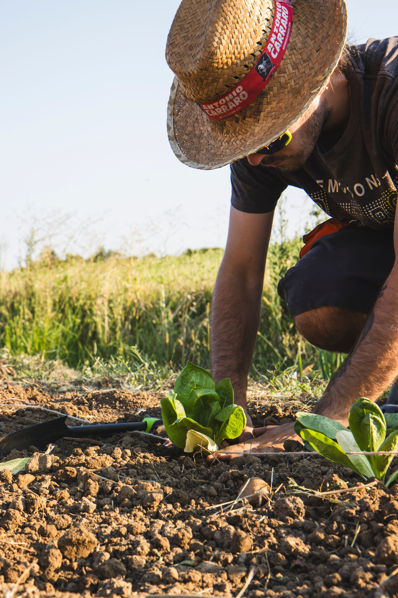

💡 O grande objetivo: Os meios de produção da agricultura sustentável provam que é possível produzir em alta escala colaborando com a natureza, e não lutando contra ela. O resultado são alimentos mais saudáveis, solos que permanecem férteis por séculos e a preservação da biodiversidade.
